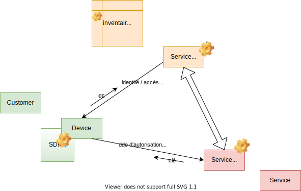
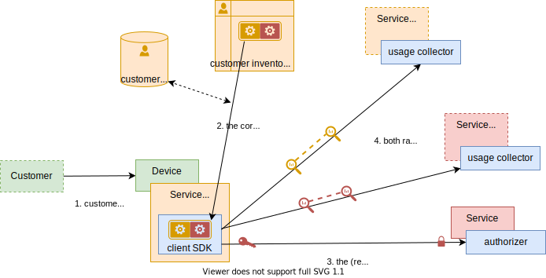
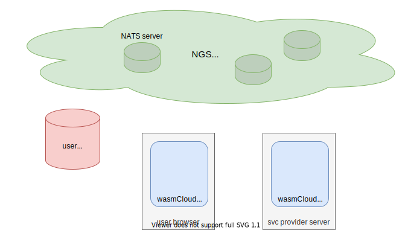

Rationale
Context
IPCEI CIS WP2
- Important Projects of Common European Interest
- Cloud Infrastructure and Services
- Work Package #2
- Orange submission: open-source and distributed Core Commerce for IT
Value proposition
-
In a complex service ecosystem and/or 5G context, the rating of service usage is highly complex:
- service providers are no longer those who are in direct contact with the customer or those who invoice the customer, there are aggregators, marketplaces...
- the pricing rules for the usage of technical services may be different depending on the reseller (composite services, service bundles, discounts on purchase, on usage)
- even more: "à la carte" pricing for each customer
-
Rather than uploading raw usage data (~CDR), rated in a centralized rating engine system (or semi-distributed between the various partners who contribute to the final service provided to the customer), we propose to ditribute the rating process to the customer device and upload to the service vendor of usage tickets already valued
- each of the partners contributes to the specific pricing of the customer, the pricing is made directly at the same time as the consumption of the service
- to do a parallel with rights management: it is easier to have components that each carry their authorization model rather than applying the model externally to the entire system
- each partner brings (in the form of an agent) the valuation engine of his service, possibly configured / overloaded by a partner reusing this service
- "as code" rating engine approach rather than a fixed and parameterized system
-
Prerequisites for this scenario are: "reasonably secure" device environment, possibility of deploying code on this environment, ability to detect fraud
-
Orange offers an SDK to its partners allowing them to simply integrate the enhancement of the service into the application used to consume the service
- the SDK is a wasmcloud-js runtime that can run code (1 or wasmcloud agents) in charge of recovery
- the service consumer application feeds the SDK with usage data
Requirements
Main problematics
-
build a model that can support all scenarios of an open service ecosystem (B2B2X)
- vendors, aggregators, marketplaces, dynamic, as-a-service, recharging...
-
establish a shared trust between the 3 main actors (Service Provider, Vendor and Consumer)
- being able to distribute (crypto) proofs of usage, of subscription...
- "good enought" security model, especially on the users devices
-
fraud detection mecanism
Requirements
-
the solution
- cannot rely on DPI to identify trafic usage (cf. HTTP2/3/QUIC)
- is over-IP
- implement (or is frendly to) fraud detection mecanisms and is auditable
- does not require prior human agreement between the service vendor and the service provider (self-service)
-
optionnally, the solution should
- be compatible with a non reliable network (intermitent conncectivity, off-line mode)
Use cases
Some base examples, they could be combined
- clients sharing the same bucket for a given service (eg. Friends and Family offers)
- vendors reselling bundles of services with a different tarification (eg. 30% on Netflix + OCS bundle)
- composite offer (eg. free dataplan for watching VOD service)
- context dependant offers (eg. free videoconference while being at a special event)
- sponsored services (eg. third party offering 20% coupons on VOD for two months)
- each client gets its personalized offer
Model
Domain exploration
- 3 main actors
- Service Consumer
- Service Vendor
- Service Provider

-
concepts
- rating engine
- proofs
- subscription
- usage
- identity
-
offers
- on usage
- pre-paid
- can an monthly subscription be seen as pre-paid?
-
payments
- 3 types
- µ-transaction: no billing, 1 usage = 1 immediate payment
- post-paid: 1 usage = 1 future payment on a bill
- pre-paid: w/ bucket, 1 usage = 1 bucket update
- in a 3-party interaction (user, vendor, provider)
- either the provider has to trust the vendor to "recover user's paiments"
- needs pre-agreement or a base of trusted vendors) DONT: incompatible w/ requirements
- either the vendor is paying the provider immediatly for the user's usage
- either the vendor has already bought a "pre-paid bucket" to the provider
- either the provider has to trust the vendor to "recover user's paiments"
- 3 types
-
B2B2C scenarios, bucket delegation
- the vendor buys pre-paid bucket to the provider
- it can split it among it's users
- user is paying the usage directly to the provider
- or decide to have an other payment type (µ-payment, billing)
- vendor is paying the usage to the provider
- it can split it among it's users
- the vendor buys pre-paid bucket to the provider
findings
- billing is a vendors responsibility, not a provider one
- it might be simplier (ie. support more scenarios) to always have a user>vendor>provider chain instead of a direct user>provider relation
to be discussed
-
entities modeling
- are Service Vendors also service providers?
- are service Vendors also service consumers?
- implementation note: instead of inheritance we can use traits
-
where shoud the usage proof go ?
- service vendor / provider / both
- avoid proxies
-
similar / alternative approaches
- Distributed IoT Online Rating – The Global Rating Grid @mavoco.com
- are there research papers on the subject?
- Shine (Orange internal project) third party use-cases
Solution 1
proposed solution (WIP)
third party management
basic case: the service vendor is the service provider
-
key ideas
- usage rating is done client-side via a rating agent deployed inside the service client app
- a rating agent also acts as an authorization for consuming the service
- a rating agents is the implementation of a commercial offer subscibed by the client, it is managed like a contract
-
communication diagram
complex case: service vendor and service provider
- key ideas
- the service vendor subscribes to a service provider (exactly like an end-user customer)
- the users rating agent is a composite of service vendor and service provider rating agents
- the service provider's rating agent is used as the authorization for consuming the service
- end-user usage is uploaded to both service vendor and service provider
service subscription

service usage

and what about provisionning?
counting and rating
prepaid / bucket management
post-paid
µ-payments
About wasmCloud

Pros & Cons
wasmCloud pro & cons of in the context of this prototype
-
pros
- robust and ubiquous connectivity, network mesh over IP (inherited from NATS)
- zero-trust by design (as long as the runtime is secure): signed nodes, payloads & communications
- efficient
- event driven model, scalable, multi-region friendly
- clean split between pure functions (ie. wasmCloud Actors) and internal states / outside world (ie. wasmCloud CapabilityProviders)
- node runtime support many different hosts (vm, docker, k8s, browsers...)
- polyglot platform (mostly Rust for now)
-
cons
- young technology (in the CNCF sandbox, but quite active)
- opinionated PaaS approach
- no oob support from hyperscalers
- wip on orchestration / observability
- important learning curve on development stack
- rust as main programming language
- cannot (or difficult to) leverage on existing rust framework
- sometimes cryptic error messages
- lack of extensive documentation
-
recommandations for this prototype
- use wasmCloud "at the egde", do not try to implement the whole solution with wasmCloud
Main concepts
| concept | caracteristics |
|---|---|
| host | or node, runtime on a host, erlang VM |
| lattice | meshed netork, NATS |
| actors | wasm payloads, stateless functions, implementing an interface |
| capability providers | wasm payloads, stateful and attached to a node, offering services |
| links | declarative links between actors and capability providers |
| interface | functionnal interface of an actor / capability |
the wasmCloud dashboard

Resources
main sites
- wasmcloud.com - links, articles
- wasmcloud.dev - product documentation
- cosmonic.com - the company that supports the opensource
- nats.io
documentation and trainings
- wasmCloud doc
- NATS doc
- Cosmonic: Introduction to wasmCloud & WebAssembly basics
- Linux Foundation: WebAssembly Actors: From Cloud to Edge
articles
- Reflections on Three Years of wasmCloud, Kevin Hoffman
- WebAssembly Components and wasmCloud Actors: A Glimpse of the Future, Taylor Thomas
Architecture
components
-
browser runtime
- javascript wasmCloud runtime deployed as javascript SDK
-
user ident/authent
- OIDC / OAuth
- expose service to recover browser runtime host-keys
-
ngs
- NATS network
